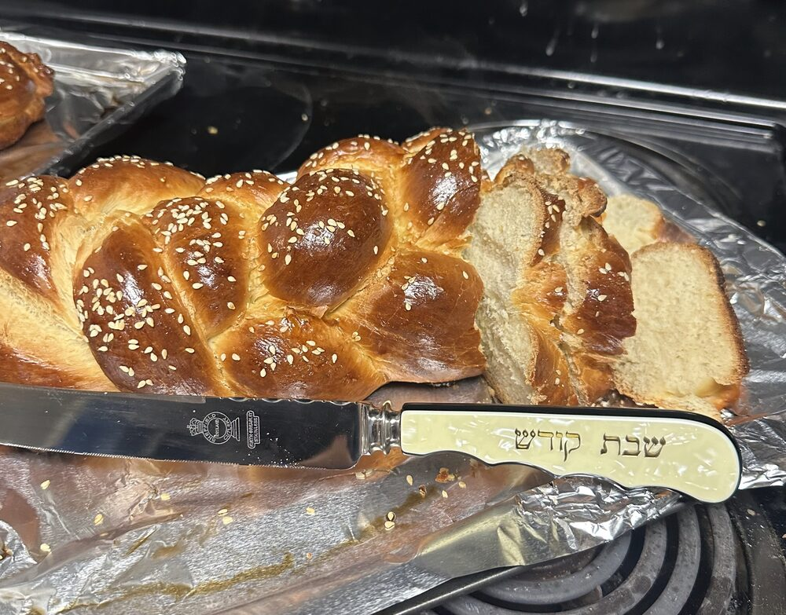
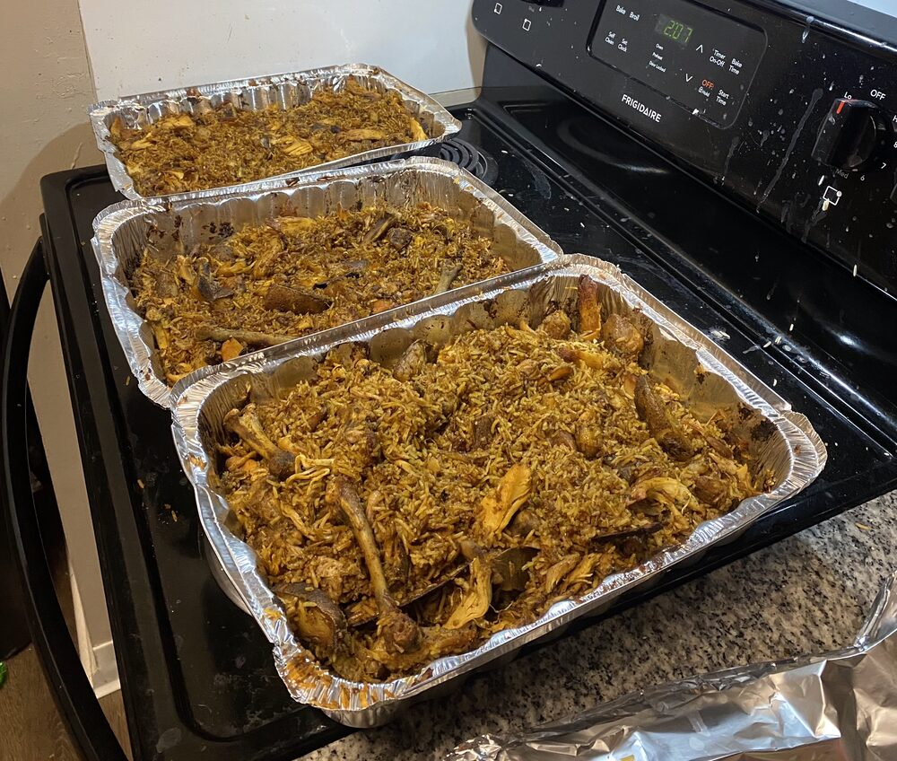
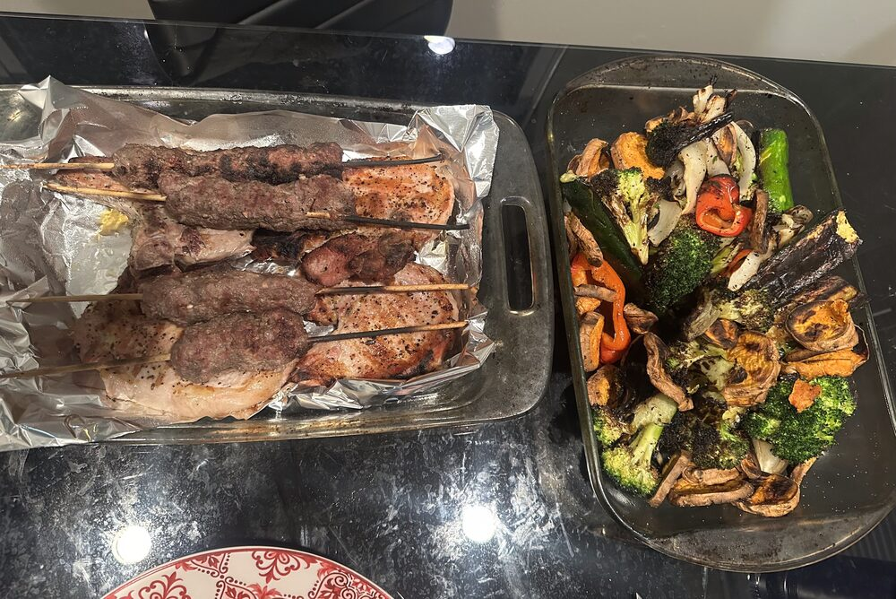
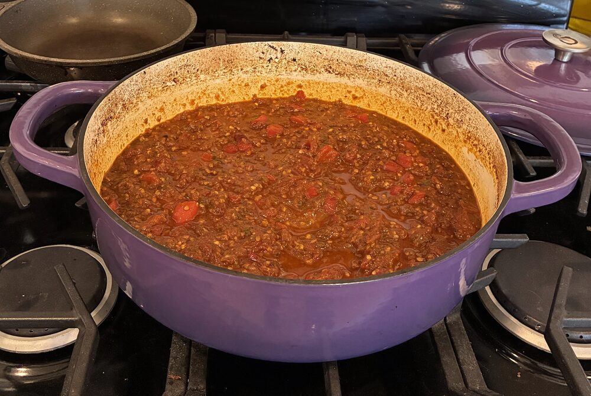
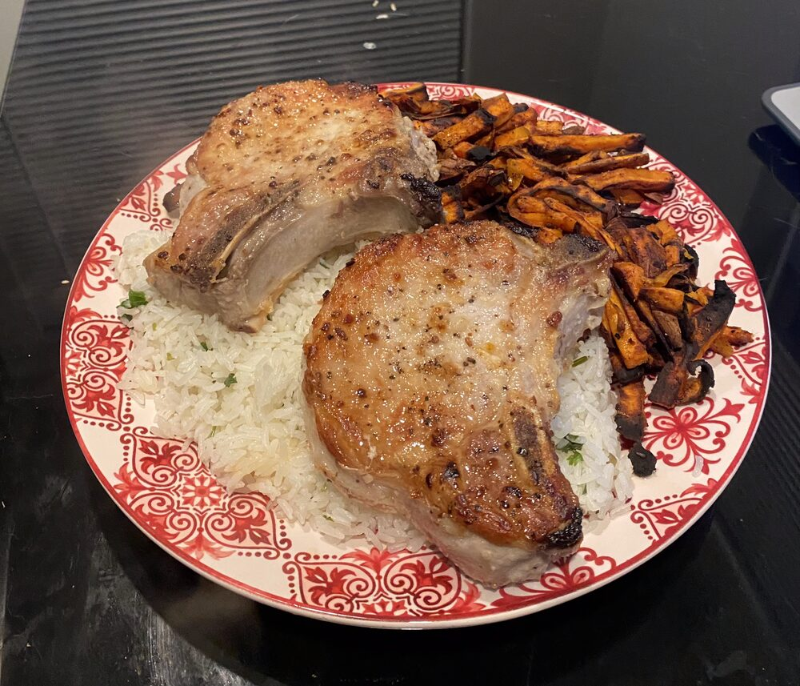
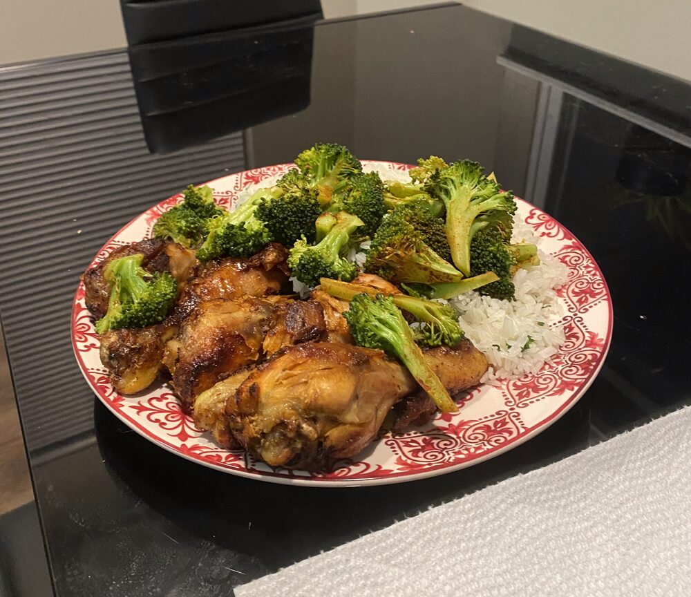

When I'm not doing research, I'm probably cooking something new, at jiu-jitsu, or being loudly informed by my cat that her food bowl is empty.
This is Amora, my very vocal cat. She has opinions about everything and isn't shy about sharing them.
I love trying new recipes. Here are a few things I've made.





